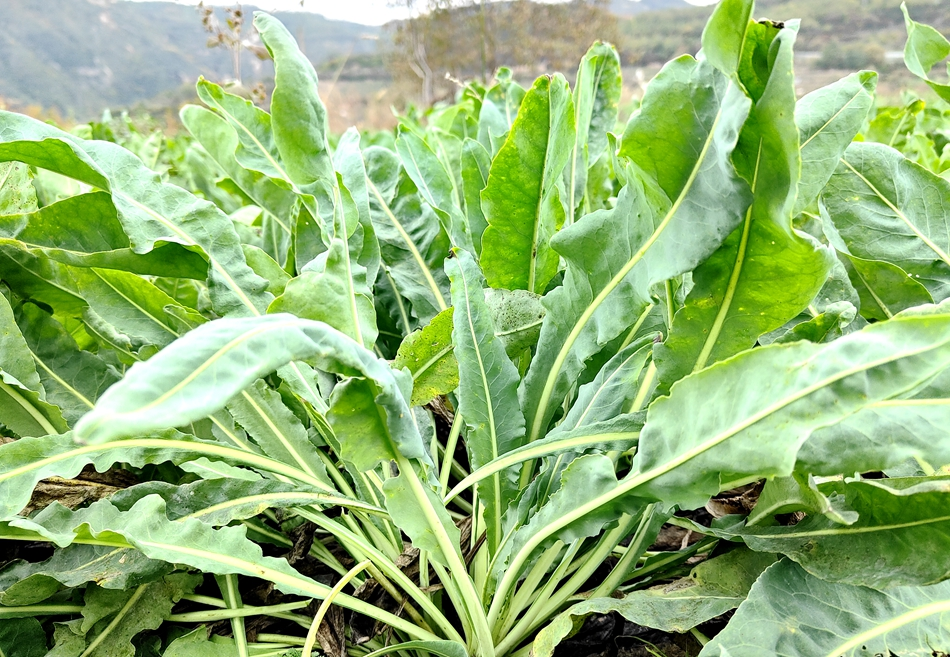
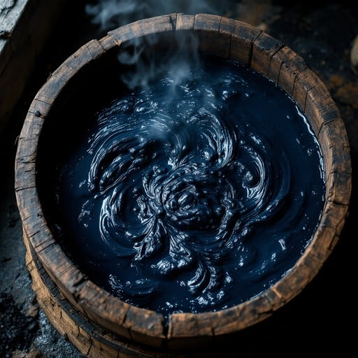
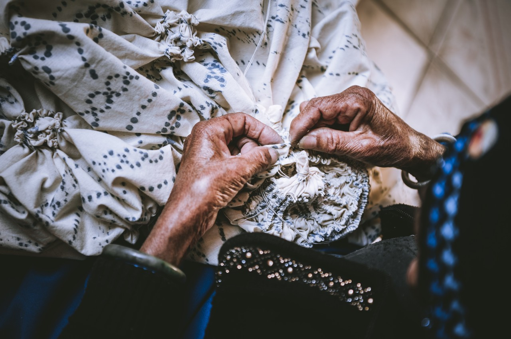
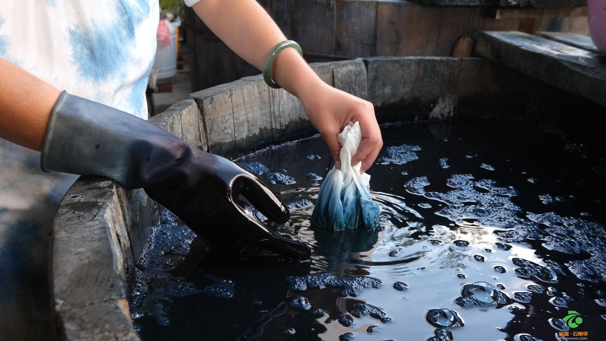
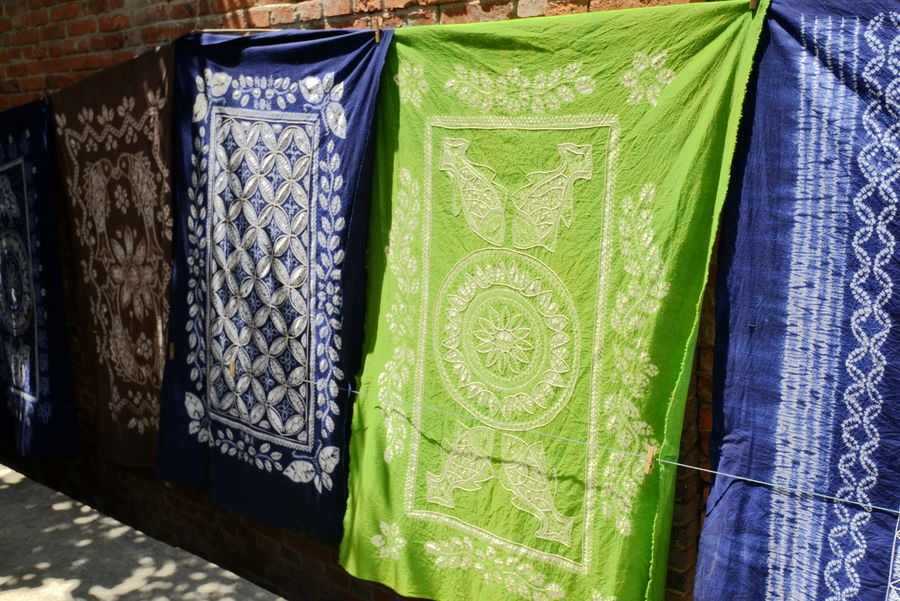
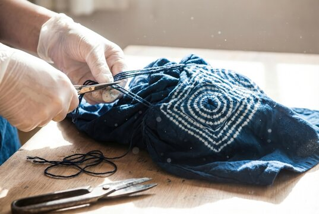
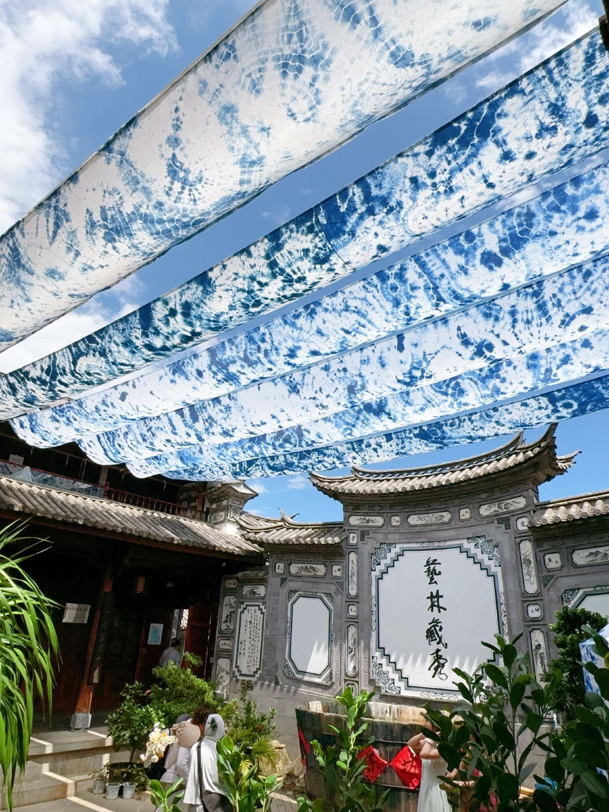

P. 01
BLUE HERB
一 · 从草木取色
采蓝草
蓝靛并非矿物颜料，而来自草木。大理蓝染多取板蓝根等植物， 采摘茎叶后进入浸泡与发酵。布上那抹沉静的蓝，最初只是山野里的一片绿。
- 原料
- 板蓝根茎叶
- 手感
- 叶厚、色浓，略带草木气息

BAIZU TIE-DYE · SEVEN MOVEMENTS
一匹白布如何记住苍山的风、蓝草的汁与双手的温度？ 请沿着这条缝线向下读，每一页，都是蓝白相见之前的一段路。
白族扎染不是“把布染蓝”这么简单。防染的线扎在哪里，靛缸浸得多深， 空气里的氧如何让黄绿慢慢转为深蓝，都会决定最终的花。
阅读时请留意中线上的针脚。一 · 从草木取色
蓝靛并非矿物颜料，而来自草木。大理蓝染多取板蓝根等植物， 采摘茎叶后进入浸泡与发酵。布上那抹沉静的蓝，最初只是山野里的一片绿。

二 · 让时间参与染色
蓝草在水中慢慢析出颜色，经过发酵与打靛，沉成靛泥。 真正入缸前，还要以石灰水等调节染液。蓝并不是即时出现，而是被时间和微生物“养”出来的。

三 · 先画下看不见的花
这是扎染真正的“起稿”。匠人把布折叠、捏起、捆扎，或用针线沿纹样缝紧。 被线缚住的地方染液进不去，拆线后才会留下清晰或朦胧的白。

四 · 让布饮饱染液
扎好的布进入靛缸。第一次浸染往往不会得到很深的蓝， 需要让布充分接触染液，再取出透氧，如此一遍遍重复。蓝色因次数与时间而渐深。

五 · 最奇妙的一刻
刚出缸的布常带着黄绿色调，像还没有决定要成为什么颜色。 空气中的氧与靛蓝接触后，它会一点点加深，最终显出沉静的蓝——这一刻，颜色才真正浮现。

六 · 拆开等待的答案
染色结束，并不意味着图案已经完成。匠人要逐一剪开、拆去捆线和缝线。 被守住的白与染进去的蓝终于相遇，蝴蝶、梅花、放射纹在水洗之前就已显现。

七 · 把蓝留在布里
最后用清水漂去浮色，让蓝白纹样变得通透，再展开、晾干。 一匹扎染布到这里完成，但它的颜色仍会随着使用与日晒慢慢变化，继续留下时间的痕迹。
